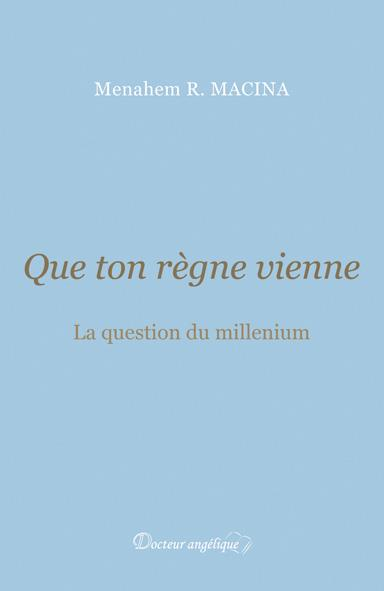

Sous-titre: La question du millenium L’auteur: Format: Pages: Rayon: EAN: Prix: Parution:
Menahem R. MACINA 200 x 130 204 p. Débats/controverses 978-2-918303-32-9 15 € 16 mai 2019
Points forts
Quatrième de couverture
Selon de très anciennes traditions juives, relayées dans l’Église primitive par les « presbytres » (litt. Anciens) – qu’Irénée de Lyon (IIe s.) appelle « disciples des Apôtres » –, le règne triomphal de Dieu aura lieu sur la terre et durera mille années, comme en témoigne l’Apocalypse (Ap 20, 6). Après s’être maintenue durant au moins trois siècles, cette croyance – qui n’était pas partagée par tous les chrétiens – s’est trouvée marginalisée, puis combattue, jusqu’à être l’objet, à l’époque moderne, d’une mise en garde officielle du Magistère de l’Église, que résume ce jugement prudentiel exprimé dans un décret romain de 1942, concernant cette doctrine: « on ne peut l’enseigner en toute sécurité ». Le but de cet ouvrage est d’exposer le substrat antique de cette croyance et son orthodoxie originelle en l’illustrant par des textes appartenant à une tradition sûre, parvenue jusqu’à nous en droite ligne des Apôtres, et dont témoignent des porte-parole sûrs de l’antiquité chrétienne, dont les œuvres ont été préservées et appartiennent au patrimoine incontesté de la doctrine chrétienne.
L’auteur
Licencié en histoire de la Pensée juive (Université Hébraïque de Jérusalem – Université Catholique de Louvain, 1977-1985), Menahem R. Macina a enseigné dans plusieurs universités européennes. Il est l’auteur de nombreuses études sur les doctrines eschatologiques juives et chrétiennes traditionnelles.